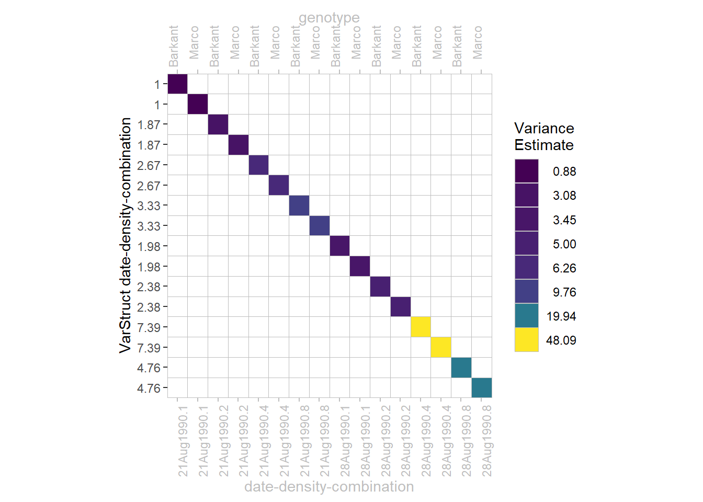
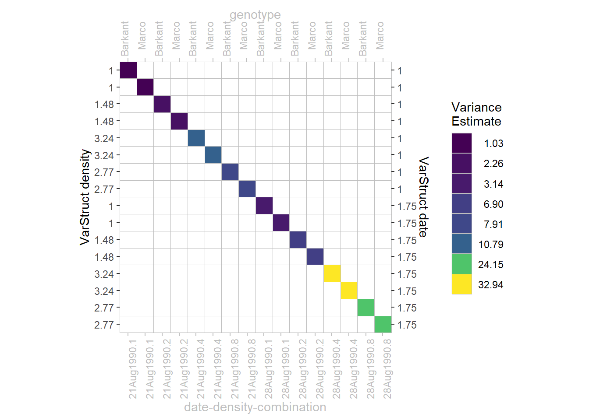

This covariance structure has heterogenous variances and zero correlation between elements.
In our chapter on heterogeneous error variances, we fit models in which we allow for different error variances for two of the treatments. Thus, the off-diagonals are all 0, but there are multiple variances on the diagonal. More specifically, in mod5 we allows for 8 different error variances - one for each factor-level-combination of the respective factor effects date and density. This is visualized in the plot below as 8 different colors. Speaking in the syntax of nlme, we obtain 8 parameter estimates: 1 estimate for the model-object’s sigma (= standard deviation for error term) and 7 estimates (that are different from 1) in the model-object’s varStruct as can be seen on the y-axis:

In order to give a clearer picture, the variance matrix presented here was reduced to data of a single block in order to have dimensions 16x16. Since there were 4 complete blocks in the dataset, the entire variance matrix of the error term has dimensions 64x64. However, given that data/errors are sorted accordingly, our presented matrix is simply 1 out of 4 blocks in a block diagonal matrix.
It is possible to combine any two or more variance structures via direct multiplication a.k.a. the Kronecker product. This operation on two matrices of arbitrary size resulting in a block matrix is sometimes denoted by ⊗.
To give an example, we refer to to mod4 in the chapter on heterogeneous error variances. Here, a multiplicative variance structure results from the kronecker product of two diagonal variance structures. The first diagonal variance structure allows for different variances for the 2 levels of date, while the second diagonal variance structure allows for different variances for the 4 levels of density. Their Kronecker product therefore results in 8 different variances, visualized in the plot below as 8 different colors.

One may now ask where the difference lies between this multiplicative variance structure for mod4 on the one hand, and the simple diagonal variance structure for all 8 date-density-combinations in mod5 (see diagonal section above) on the other hand. The question comes intuitively, since both lead to obtaining 8 different variance estimates for the error term. However, while the combinations for which the 8 estimates are obtained are the same, the estimates themselves are different between mod4 and mod5. In order to understand this, one must realize that fewer parameters need to be estimated here for mod4 (= 6 parameters) compared to the simple diagonal variance structure for mod5 (= 8 parameters) - even though both result in 8 different variance estimates! One can retrace this manually by counting the number of varStruct values on the y-axes of the two plots. There should be 5 values for mod4 and 7 values for mod5 that are not equal to 1 and in addition, sigma (= standard deviation for error term) itself is the missing parameter here.
Therefore, direct multiplication can lead to the desired structure with fewer parameters needing to be estimated. Notice that the number of parameters penalizes the AIC and therefore has a direct impact on model selection decisions. In the underlying chapter on heterogeneous error variances, mod4 (= multiplicative) is indeed chosen over mod5 based on the AIC.
Please feel free to contact us about any of this!
schmidtpaul@hotmail.de